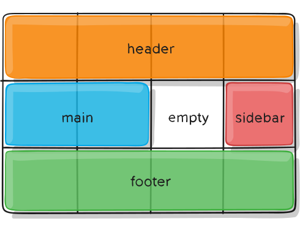

Grid Container Properties
display:
Defines the element as a grid container and establishes a new grid formatting context for its contents.
.container {
display: grid | inline-grid;
}
grid-template-columns AND grid-template-rows
Defines the columns and rows of the grid with a space-separated list of values. The values represent the track size, and the space between them represents the grid line.
.container {
grid-template-columns: 40px 50px auto 50px 40px;
grid-template-rows: repeat(3, 150px);
}
grid-template-areas
Defines a grid template by referencing the names of the grid areas which are specified with the grid-area property. Repeating the name of a grid area causes the content to span those cells. A period signifies an empty cell. The syntax itself provides a visualization of the structure of the grid.
.container {
display: grid;
grid-template-columns: 50px 50px 50px 50px;
grid-template-rows: auto;
grid-template-areas:
"header header header header"
"main main . sidebar"
"footer footer footer footer";
}
.item-a {
grid-area: header;
}
.item-b {
grid-area: main;
}
.item-c {
grid-area: sidebar;
}
.item-d {
grid-area: footer;
}

justify-items AND align-items
justify-items: aligns grid items along the row inside the grid cell.
align-items: aligns the grid items along the column inside the grid cell.
.container {
justify-items: start | end | center | stretch;
}
.container {
align-items: start | end | center | stretch;
}
justify-content AND align-content
If the total size of your grid is less than the size of its grid container, then you can set the alignment of grid within the grid container.
justify-content: aligns the grid along the row of the grid container.
align-content: align the grid along the column of the grid container.
.container {
justify-content: start | end | center | stretch | space-around | space-between | space-evenly;
}
.container {
align-content: start | end | center | stretch | space-around | space-between | space-evenly;
}
Grid Item Properties
grid-column-start AND grid-column-end
Determines the grid item's location within the grid by referring to specific grid's vertical lines. If there are 'N' columns, then vertical lines will go from 1 to 'N+1' in left to right direction.
grid-column is the short hand for grid-column-start + grid-column-end
.item {
grid-column-start: <number>
grid-column-end: <number>
}
.item {
grid-column: <start-line> / <end-line>
}
grid-row-start AND grid-row-end
Determines the grid item's location within the grid by referring to specific grid's horizontal lines. If there are 'N' rows, then horizontal lines will go from 1 to 'N+1' in top to bottom direction.
grid-row is the short hand for grid-row-start + grid-row-end
.item {
grid-row-start: <number>
grid-row-end: <number>
}
.item {
grid-row: <start-line> / <end-line>
}
grid-area
Gives an item a name so that it can be referenced by a template created with the grid-template-areas
.item {
grid-area: <name>
}
justify-self AND align-self
justify-self: aligns a grid item inside a cell along the row.
align-self: aligns a grid item inside a cell along the column.
.item {
justify-self: start | end | center | stretch;
align-self: start | end | center | stretch;
}